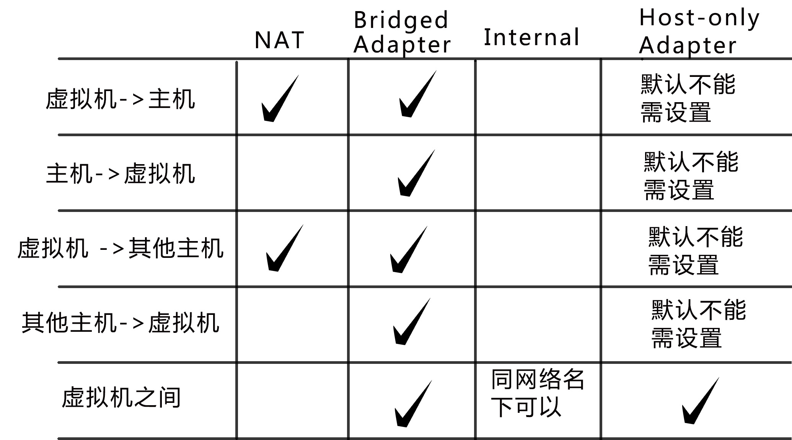

VMware 各个文件的作用
虚拟机的文件管理由VMware Workstation来执行
一个虚拟机一般以一系列文件的形式储存在宿主机中，这些文件一般在由workstation为虚拟机所创建的那个目录中
这里列出了这些关键文件及其扩展名
在以下说明例子中，[vmname]表示创建的虚拟机名字
.log文件
文件类型说明：文本文件
[vmname].log or vmware.log
该文件记录了VMware Workstation对虚拟机调试运行的情况
当碰到问题时，这些文件对我们做出故障诊断非常有用
.nvram文件
文件类型说明：VMware virtual machine BIOS
[vmname].nvram
该文件储存虚拟机BIOS状态信息
.vmx文件
文件类型说明：VMware virtual machine configuration
[vmname].vmx
该文件为虚拟机的配置文件，储存着根据虚拟机向导或虚拟机编辑器对虚拟机进行的所有配置
有时需要手动更改配置文件以达到对虚拟机硬件方面的更改。可使用文本编辑器进行编辑
如果宿主机是Linux，使用VM虚拟机，这个配置文件的扩展名将是.cfg
.vmdk文件
文件类型说明：VMware virtual disk file
[vmname].vmdk or [vmname]-s###.vmdk
这是虚拟机的磁盘文件，它储存了虚拟机硬盘驱动器里的信息
一台虚拟机可以由一个或多个虚拟磁盘文件组成
如果在新建虚拟机时指定虚拟机磁盘文件为单独一个文件时，系统将只创建一个[vmname].vmdk文件
该文件包括了虚拟机磁盘分区信息，以及虚拟机磁盘的所有数据
随着数据写入虚拟磁盘，虚拟磁盘文件将变大，但始终只有这一个磁盘文件
如果在新建虚拟机时指定为每2GB单独创建一个磁盘文件的话，虚拟磁盘总大小就决定了虚拟磁盘文件的数量
系统将创建一个[vmname].vmdk文件和多个[vmname]-s###.vmdk文件（s###为磁盘文件编号），其中[vmname].vmdk文件只包括磁盘分区信息，多个[vmname]-s###.vmdk文件存储磁盘数据信息
随着数据写入某个虚拟磁盘文件，该虚拟磁盘文件将变大，直到文件大小为2GB，然后新的数据将写入到其他s###编号的磁盘文件中
如果在创建虚拟磁盘时已经把所有的空间都分配了，那么这些文件将在初始时就具有最大尺寸并且不再变大了
如果虚拟机是直接使用物理硬盘而不是虚拟磁盘的话，虚拟磁盘文件则保存着虚拟机能够访问的分区信息
早期版本的VMware产品用.dsk扩展名来表示虚拟磁盘文件
[vmname]-[######].vmdk
当虚拟机有一个或多个快照时，就会自动创建该文件
该文件记录了创建某个快照时，虚拟机所有的磁盘数据内容
[######]为数字编号，根据快照数量自动增加
.vmsd文件
文件类型说明：VMware snapshot metadata
[vmname].vmsd
该文件储存了虚拟机快照的相关信息和元数据
.vmsn文件
文件类型说明：VMware virtual machine snapshot
[vmname]-Snapshot[##].vmsn
当虚拟机建立快照时，就会自动创建该文件。有几个快照就会有几个此类文件
这是虚拟机快照的状态信息文件，它记录了在建立快照时虚拟机的状态信息
[##]为数字编号，更具快照数量自动增加
.vmem文件
文件类型说明：VMEM
[vmname]-[uuid].vmem
该文件为虚拟机内存页面文件，备份了客户机里运行的内存信息
这个文件只有在虚拟机运行时或崩溃后存在
.vmss文件
文件类型说明：VMware suspended virtual machine state
[vmname].vmss
该文件用来储存虚拟机在挂起状态时的信息
一些早期版本的VM产品用.std来表示这个文件
.vmtm文件
文件类型说明：VMware team configuration
[vmname].vmtm
该文件为虚拟机组Team的配置文件。通常存在于虚拟机组Team的文件夹里
.vmxf文件
文件类型说明：VMware team member
[vmname].vmxf
该文件为虚拟机组team中的虚拟机的辅助配置文件
当一个虚拟机从虚拟机组team中移除的时候，此文件还会存在
网络互通总结
